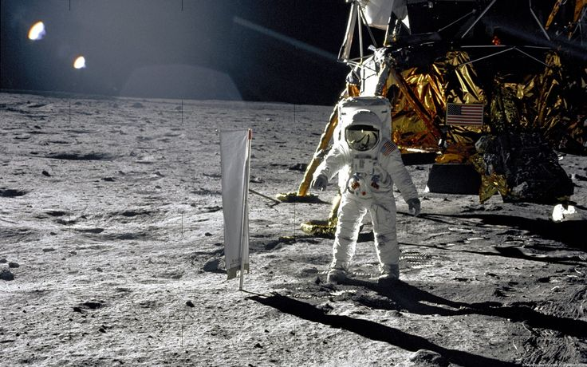
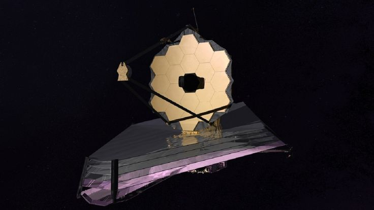

INTO COSMOS
Beyond Earth lies a universe waiting to be explored

Who we are?
Into the Cosmos is your gateway to the wonders of space. From distant galaxies to historic
missions, we bring the universe closer to everyone who dreams of exploring beyond
Earth.
Every star has a story, every planet holds a mystery, and every mission brings us one
step closer to understanding the univers
OUR MISSION

Inspire the Next Explorer
Cosmos is a place of mystery, breathtaking beauty. Every planet holds a secret, Every visitor has the potential to become the next explorer of the universe

Future Begins in Space
Space exploration is shaping tomorrow through groundbreaking technology,Together, we look beyond Earth toward a brighter future
FEATURED DESTINATIONS

The Blue Planet
Earth is the third planet from the Sun, located approximately 149.6 million kilometers
away.
It is the only known planet capable of supporting life due to its breathable
atmosphere, liquid water, protective magnetic field, and suitable temperatures.
It has an
average diameter of approximately 12,742 kilometers and completes one orbit around the Sun
every 365.25 days.
The Next Frontier
Mars is the fourth planet from the Sun, located at an average distance of approximately 227.9 million kilometers Orbit around the Sun takes 687 Earth days The largest volcano in the Solar System, Mars remains one of the primary targets for robotic exploration and future human missions due to evidence that liquid water once existed on its surface


The Ice Giant
Neptune is the eighth and farthest known planet from the Sun, orbiting at an average distance
of approximately 4.5 billion kilometers (2.8 billion miles), With it's diameter of 49,244
kilometers
Neptune completes one rotation every 16 hours and takes about 165 Earth years
to orbit the Sun.
reaching speeds of up to 2,100 kilometers per hour.
SPACE MISSIONS
Explore humanity's greatest

Apollo11
In 1969, Apollo 11 became the first mission to successfully land humans on the Moon, Neil Armstrong and Buzz Aldrin made history by taking humanity's first steps on the lunar surface

James Webb Space Telescope
Launched in 2021, the James Webb Space Telescope explores the early universe and captures detailed images of distant galaxies, stars, and planets